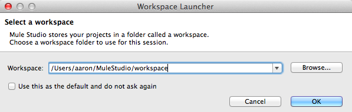
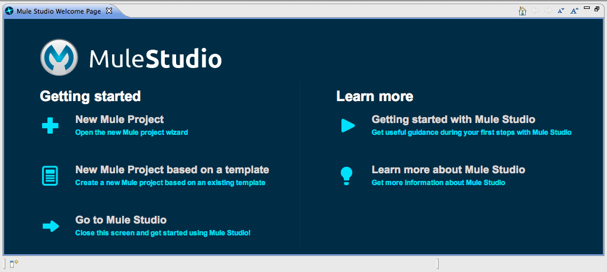
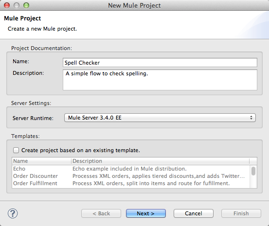
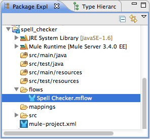
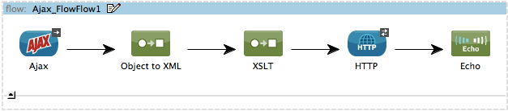
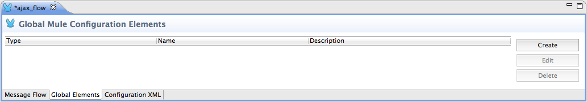
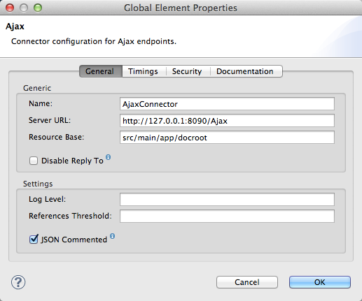
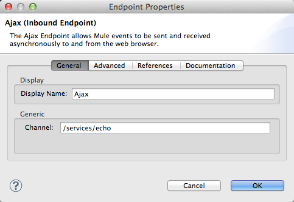
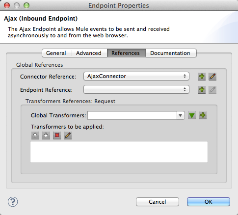

Adjust the depth of the content
to your level of attention!
Your state right now:
state
Intermediate Studio Tutorial
The Basic Studio Tutorial demonstrated how to build a simple spell checker application.
This intermediate tutorial demonstrates how to use the Studio drag-and-drop interface to build a more sophisticated Ajax spell checker application that incorporates the following:
the Google Spell Checker Web service
an HTML page
a sequence of pre-packaged Mule building blocks.
This tutorial covers the following tasks:
Creating a flow that features an Ajax endpoint and an Ajax connector
Translating data from a web page into the Mule message processing flow
Using XSL and Mule Transformers to pre-process user input into an XML format that the Google API can understand
Creating a connection to the Google Spell Checker API so it can process Web page input
Returning XML data to the originating web page via the Ajax transport channel
Implementing a Jetty HTTP server within the flow
This tutorial requires approximately 30 minutes to complete. If you prefer a more guided approach to this tutorial, consider signing up for free Mule ESB Training, which uses this tutorial to demonstrate how to use Mule Studio.
Create a Studio Project
The Ajax Spell Checker flow contains five Mule components plus a connector.
Launch Studio
If you have already launched Studio as part of the installation process, and it is now running, skip the rest of this section and proceed directly to: Creating a New Project.
1.Navigate to the directory on your local drive in which youru installed Studio.
2.Double-click the executable file to launch Studio.
MuleStudio.exe in Windows
MuleStudio.app in Mac OS
MuleStudio in Linux
<
3. When Studio presents the Workspace Launcher dialog, click OK to accept the default workspace.

4.If this is the first time you have launched Studio, you may see a Welcome screen as per below. Click Go to Mule Studio to dismiss the screen.

Create a new Studio Project
1.From the Studio application menu, click File > New > Mule Project.
2.Studio opens the New Mule Project wizard. Fill in the Name field with the value Spell Checker.
3.Click anywhere in the Description text box, then type comments pertaining to the project, if you wish.
4.Note that Studio populates the Server Runtime field with the server which comes bundled with Studio.

5.Click Next to proceed.
6.Studio prompts you to create a new flow in your new project. It auto-fills the flow Name field and flow File Name field using the name of the Mule project you entered. Adjust the field values and add a description of the flow if you wish, then click Finish.
6.In the Package Explorer, Spell Checker.mflow appears under the flows folder and mule-project.xml appears under the src folder. The .mflow file stores flow information for the visual editor.

Add Components to the Flow
If the Ajax Spell Checker flow you just created is not already open, double-click ajax_flow.mflow, which resides under the flows node in the Package Explorer pane.
Drag the following components onto the Canvas, sequencing them as illustrated in the diagram below. These components are found in the Endpoint, Transformer, and Component categories in the Palette.
Ajax Endpoint
Object-to-XML Transformer
XSLT Transformer
HTTP Endpoint
Echo Component

Add and Configure a Connector
Next, add and configure the Ajax connector, which is a Global Element (i.e., template) that provides server connection information to the Ajax endpoint:
1. Click the Global Elements tab at the bottom of the canvas to open the Global Elements view.

2. Click the Create button to open the Choose Global Type pane.
3. Click the arrow to the left of Connectors to expand that node.
4. Select Ajax, then click OK.
Type AjaxConnector in the Name field.
Type http://127.0.0.1:8090/Ajax in the Server URL field.
Type src/main/app/docroot in the Resource Base field.

5. Click OK to close the pane.
6. The Global Elements view now lists an Ajax connector.
Configure the Building Blocks
Now the Ajax Connector has been created, configure the resources needed by the Ajax endpoint to reference the Ajax Connector.
Configure the Ajax Endpoint
The Ajax endpoint serves as the Message Source (i.e., inbound endpoint) for the flow. Configure it by completing the following steps:
1. Click the Message Flow tab to display your application flow on the canvas.
2. Double-click the Ajax component to open its Properties panel.
3. For Display Name on the General tab, enter Ajax Channel.
4. For Channel, enter /services/echo. This is the path used for communication with the web page.

5. Click the References tab and click the down arrow to the right of the Connector Ref field. Select AjaxConnector from the drop-down list. This represents the Ajax connector created earlier in the Global Elements view.

6. Click the Documentation tab, enter a meaningful description for the connector in the Description field, then click OK to close the Endpoint Properties pane.